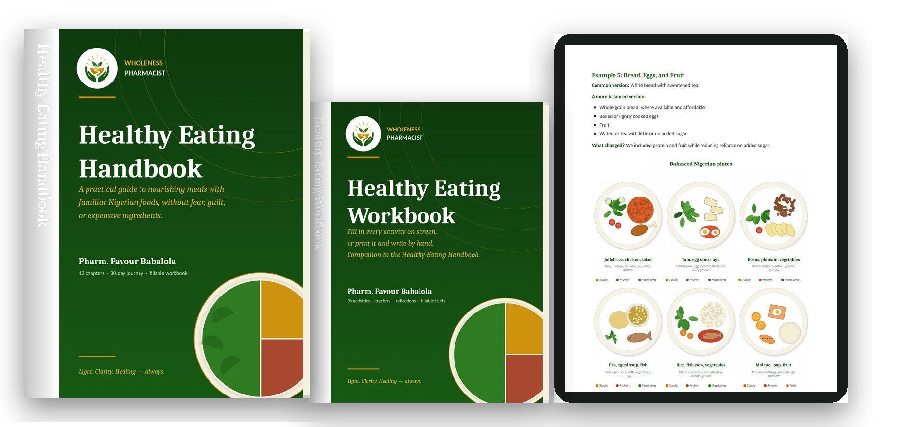
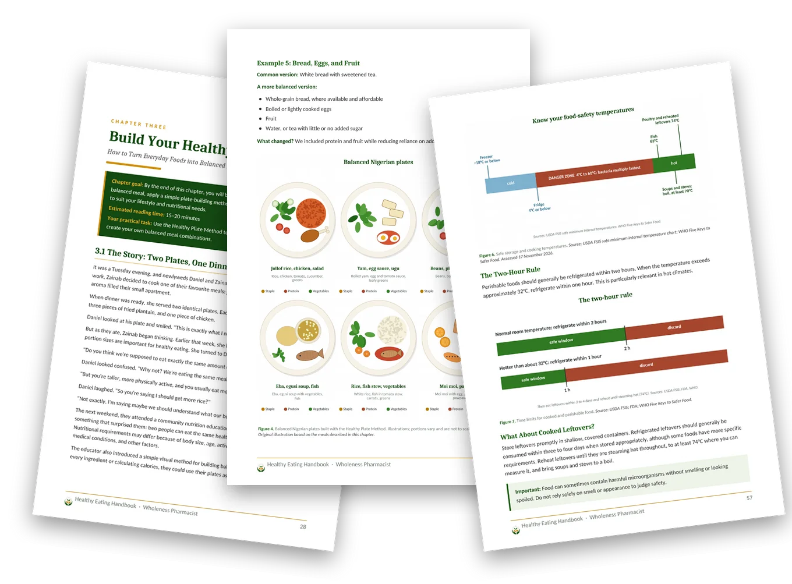
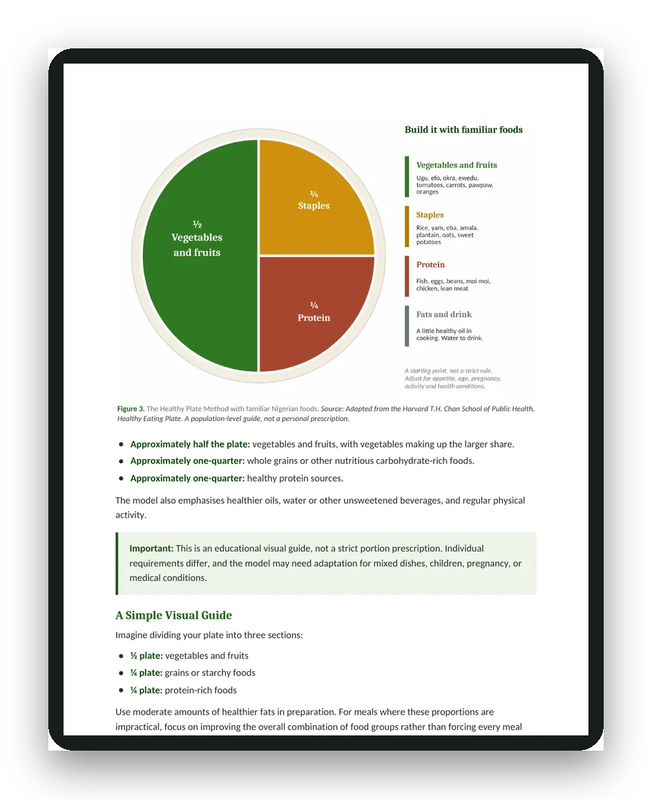
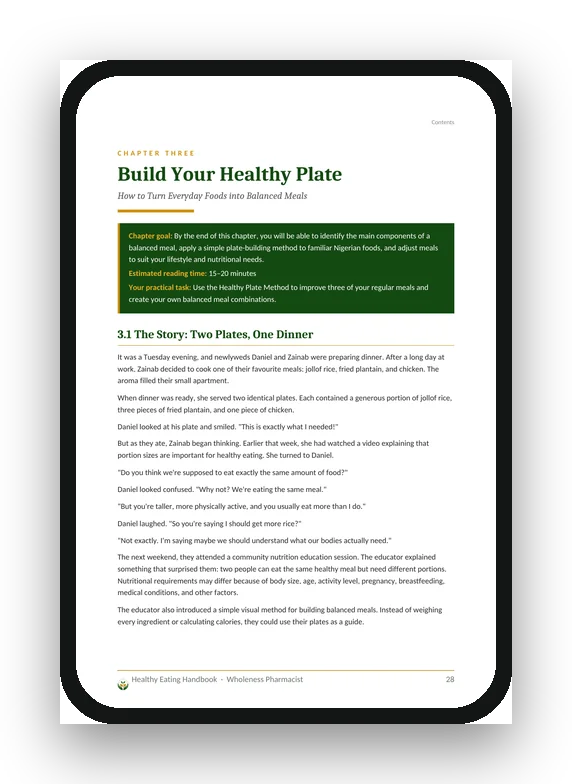
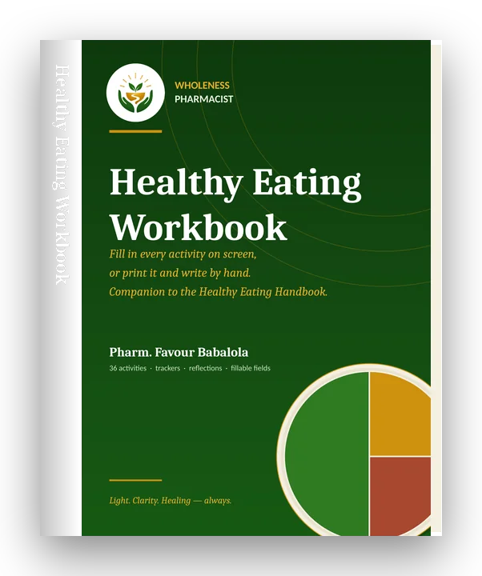

Healthy Eating Handbook · by a pharmacist
Eat healthier without giving up the foods you love.
A practical handbook, fillable workbook and 30-day plan for singles, couples and new parents. Built around familiar Nigerian foods, and useful wherever you live.
You know you should eat better. So why is it so hard to start?
Healthy Eating Handbook gives you simple systems for shopping, planning, cooking and eating out, using foods you already know. Start with one small step today.
- Digital download
- Ebook + fillable workbook
- Read on phone, tablet or computer

Sound familiar?
Eating well should not feel this complicated.
Most people do not fail because they lack willpower. They fail because the advice they find is confusing, expensive, or built around foods they do not eat.
- You watch nutrition videos, then wonder whether you must stop eating rice, swallow and yam.
- You buy healthy food on Saturday, then it spoils by Thursday because cooking feels like too much.
- You decide dinner only when you are already tired and hungry.
- You feel guilty after one celebration meal and promise to "start properly on Monday".
- Your partner eats differently, your child refuses vegetables, and food has become a source of stress.
The real problem is not you.
It is the missing system: knowing what your body needs, how to build a plate from familiar foods, how to shop and store food safely, and how to keep going on a busy week.
Food prices are rising, schedules are full, and generic advice rarely fits a Nigerian kitchen. You do not need a stricter diet. You need a clearer plan.
The solution
One handbook. One workbook. One 30-day plan.
Healthy Eating Handbook turns good intentions into everyday habits, step by step, with the foods already on your table.
Understand
Plain-language lessons on nutrients, the Healthy Plate Method, portions, food safety and what the evidence says, without fear or food rules.
Practise
Short activities, five memory tools (P.L.A.N., S.M.A.R.T., C.H.O.I.C.E., O.N.E., T.E.A.M.) and a fillable workbook you can type in or print.
Sustain
A 30-day journey, a progress tracker and a long-term routine, so one busy week does not end your progress.
What you will be able to do
Real skills for real kitchens.
Build a balanced plate
Turn jollof rice, eba and egusi, beans and plantain, or yam and egg sauce into more balanced meals without dropping them.
Eat well on a budget
Compare price with real value, shop with a plan, buy in bulk only when it makes sense, and cut waste.
Store and cook food safely
Know the temperatures, time limits and power-cut rules in one quick-reference page.
Plan without stress
Use a simple seven-day or three-meal system that fits your real schedule.
Cook healthier
Choose among seven cooking methods, manage oil and salt, and make five simple Nigerian recipes.
Eat out with confidence
Handle restaurants, street food, weddings and food pressure without guilt.
Eat well at every life stage
Singles, couples, and young families each get their own chapter with practical systems.
Stay consistent
Follow a 30-day plan, track progress and recover from setbacks without starting over.
What is inside the ebook
12 chapters in four sections.
Over 150 pages, 11 diagrams and illustrations, 4 quick-reference appendices and a full reference list. Tap a chapter to see what you will learn.
A · Build your foundation
1Before You Change Your Diet, Understand Your Starting Point
2Healthy Eating Made Simple
3Build Your Healthy Plate
B · Make healthy eating practical
4Healthy Eating on a Budget
5The Smart Kitchen Starter Guide
6Meal Planning Without Stress
7Healthy Cooking Made Easy
8Eating Healthy Outside Your Kitchen
C · Eat for your life stage
9Healthy Eating for Singles
10Healthy Eating for Couples
11Healthy Eating for Young Families
D · Make it a lifestyle
12Your 30-Day Healthy Eating Journey
Back matter
+Four quick-reference appendices
A look inside
Designed to be read, used and revisited.
These are real pages from the ebook.



Included with your purchase
Tools you can use, not just read.

Fillable Healthy Eating Workbook
36 activities that match the handbook: goal setting, food journals, budgets, meal planners, shopping lists, kitchen checklists and your 30-day tracker. Type into it on a computer or print it and write by hand.
Food Safety Quick Reference (printable)
One page with the temperatures, time limits, leftover rules and power-cut guidance used in the book. Stick it where you cook.
Healthy Plate and Nigerian Food Guide (printable)
One page with the plate diagram, Nigerian foods grouped by food group, three questions to ask before you eat and the WHO daily numbers.
EPUB edition for reading apps
A reflowable version of the handbook for phone and e-reader apps, so you can read comfortably on a small screen.
Why this ebook?
Why not just rely on free information?
Free tips are useful. They are also scattered, often contradictory, and rarely built for a Nigerian kitchen. This handbook puts the useful parts in one place.
| Scattered free posts | Healthy Eating Handbook | |
|---|---|---|
| Foods | Often imported or expensive ingredients | Built around jollof, eba, beans, yam, plantain, moi moi and other familiar foods |
| Structure | Random tips, conflicting rules | 12 chapters in four sections, with the same pattern in each |
| Safety | Rarely covered | Storage, reheating and power-cut guidance with temperatures |
| Action | Read, then forget | Activities, a fillable workbook and a 30-day plan |
| Evidence | Unclear sources | WHO and other guidance cited, with a combined reference list |
| Life stages | One size fits all | Chapters for singles, couples and young families |
About the author
Pharm. Favour Babalola
Pharm. Favour Babalola is the founder of Wholeness Pharmacist, a health and wellness education platform that helps people make confident decisions about their health through evidence-informed education, practical resources and community engagement.
She believes reliable health information should be understandable, accessible, and applicable to everyday living.
Bringing awareness to important health issues.
Simplifying health information and challenging misconceptions.
Promoting hope, prevention and appropriate healthcare-seeking.
Your copy
Everything you need to start eating better.
Healthy Eating Handbook
- Healthy Eating Handbook (PDF) Over 150 pages, 12 chapters, 4 appendices
- Fillable Healthy Eating Workbook (PDF) 36 activities, trackers and reflections
- Food Safety Quick Reference (printable PDF)
- Healthy Plate and Nigerian Food Guide (printable PDF)
- EPUB edition for phone and e-reader apps
Secure checkout on Selar. Payment options are shown at checkout.
Questions
Frequently asked questions
Is this suitable for beginners?
Is the information practical?
Do I need cooking or nutrition experience?
Is it worth the price?
How do I access the ebook?
I live outside Nigeria. Can I use this?
Does this replace advice from my doctor or dietitian?
What if I have a question or a problem with my download?
One small habit is enough to begin.
You do not need to change everything this week. Start with one meal, one plan, one habit, and let the handbook show you the next step.
Light. Clarity. Healing — always.